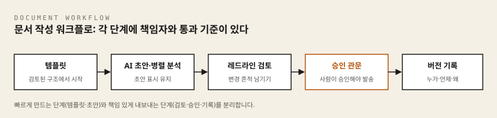
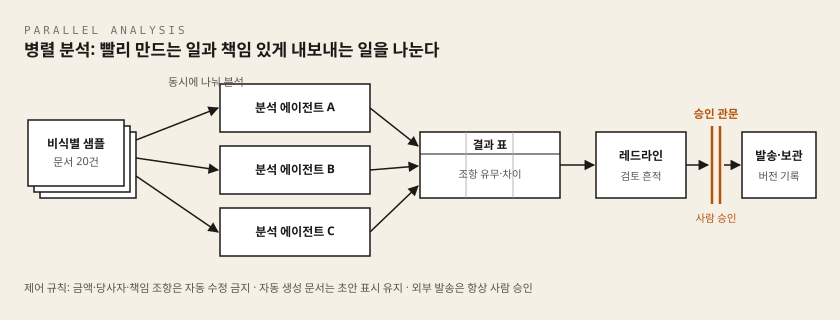

이 차시에서 준비할 것
시작하기 전에 아래를 갖춰 주시기 바랍니다. 준비가 안 된 항목은 옆의 설치가이드를 먼저 보고 오시면 됩니다.
| 준비물 | 30초 확인법 | 설치가 안 되어 있다면 |
|---|---|---|
| Windows 노트북 기본 설정 | 바탕 화면에 AX실습 폴더가 있다 | 공통 준비 설치가이드 |
| 안티그래비티(또는 대화형 AI) | 실행하면 아래쪽에 글을 입력하는 칸이 보인다 | 안티그래비티 설치가이드 |
| korean-law-mcp (선택) | 2차시에서 korean-law-mcp를 연결한 도구(기본은 안티그래비티, Claude Desktop·Claude Code·claude.ai 웹 커넥터를 고른 분은 그 도구)에서 "민법을 검색해 줘"라고 하면 도구를 쓰는 표시가 뜬다 | korean-law-mcp 설치가이드 |
| 5차시 실습지 | 인쇄물 또는 이 문서의 실습지 부분 | — |
| 4차시 결과물 | 인용 검증 실습에서 만든 표 1장 | — |
korean-law-mcp는 이 차시에서 선택 준비물입니다. 없어도 LAB 1~3은 모두 진행할 수 있고, 중간의 보강 LAB만 건너뛰면 됩니다.
이 차시에 나오는 말 (처음 보는 단어 먼저 정리)
| 용어 | 한 줄 설명 |
|---|---|
| 프롬프트 | AI에게 주는 글로 된 지시문. 이 문서의 회색 상자 안 글을 그대로 복사해 쓰면 됩니다. |
| 새 대화 | AI 화면에서 앞선 대화 내용을 끊고 처음부터 시작하는 것. 앞의 답이 뒤에 영향을 주지 않게 합니다. |
| 에이전트 | 사람이 준 지시에 따라 여러 단계를 스스로 수행하는 AI. 이 차시에서는 문서 여러 건을 나누어 읽고 표로 정리하는 역할을 맡습니다. |
| 병렬 분석 | 같은 자료를 여러 갈래로 동시에 나누어 분석하는 방식. 이 차시에서는 대화를 여러 개 열어 관점을 나눕니다. |
| 비식별 문서 | 의뢰인 이름, 사건번호처럼 특정인을 알아볼 수 있는 정보를 지운 연습용 문서. |
| 마크다운 | |와 - 같은 기호로 표와 제목을 적는 간단한 글쓰기 문법. AI가 표를 이 형식으로 만들어 줍니다. |
| MCP | AI가 외부 자료를 직접 찾아보게 연결해 주는 방식. korean-law-mcp는 법제처 법령 자료에 연결해 줍니다. |
| 문서 템플릿 | 반복해서 쓰는 문서의 공통 구조와 필수 항목을 미리 정해 둔 원형. |
| 조항 라이브러리 | 이미 검토를 마친 조항과 그 사용 조건, 대안 문구를 모아 둔 자료 모음. |
| 레드라인 | 계약서에서 고칠 부분을 표시해 남기는 검토 흔적. 누가 무엇을 고쳤는지가 보이게 하는 것이 목적입니다. |
| 버전 이력 | 누가 언제 어떤 문서를 왜 바꿨는지 남겨 두는 기록. 초안·검토본·승인본을 구분해 보관합니다. |
| 승인 관문 | 문서가 다음 단계로 가기 전, 지정된 사람이 확인하고 승인하는 지점. |
| 초안 표시 | AI가 만든 문서가 검토 전 상태임을 알리는 문구. 승인 관문에서 사람이 해제합니다. |
| 제어 규칙 | 에이전트에게 맡길 수정과 맡기지 않을 수정을 미리 정해 둔 기준. |
- 과정: 변호사 AX 나노디그리 (5차시 / 총 7차시)
- 핵심 질문: 많은 문서를 빠르게 다루면서, 검토 흔적은 어떻게 남길 것인가?
- 이 차시의 결과물: 문서 작성 워크플로 1장
이 차시에서 배우는 것
이번 차시를 마치면 다음을 할 수 있게 됩니다.
- 안티그래비티로 다수의 비식별 문서에서 특정 조항의 유무와 차이를 표로 뽑는 병렬 분석 에이전트를 구성할 수 있습니다.
- 조항 수정과 문서 자동 생성에 대해, 수정 가능 범위와 자동 생성 금지 항목을 담은 제어 규칙을 설계할 수 있습니다.
- 문서 템플릿, 조항 라이브러리, 레드라인, 버전 이력, 승인 관문을 연결한 문서 작성 워크플로 1장을 작성할 수 있습니다.
이번 차시는 앞선 차시와 이렇게 이어집니다. 3차시에서 만든 법률업무 지시서는 병렬 분석 에이전트에게 주는 지시문으로 그대로 이어지고, 4차시에서 익힌 검증 습관은 이번 차시에서 레드라인과 승인 관문이라는 형태로 문서 흐름에 붙습니다.
개념 익히기: 빨리 만드는 것과 책임 있게 내보내는 것의 분리
에이전트는 계약서 수십 건을 동시에 읽고, 특정 조항의 유무와 차이를 몇 분 만에 표로 정리할 수 있습니다. 그러나 속도는 이 차시의 절반일 뿐입니다. 병렬 분석이 만드는 것은 검토할 재료이지, 서명하거나 발송해도 되는 최종 문서가 아닙니다. 만드는 속도가 빨라질수록, 내보내기 전 승인 관문은 더 분명해야 합니다.
문서가 만들어져 밖으로 나가기까지의 흐름을 다섯 가지 장치로 나누어 살펴봅니다.
문서 템플릿
문서 템플릿은 반복해서 작성하는 문서의 공통 구조와 필수 항목을 미리 정해 둔 원형입니다. 매번 백지에서 시작하는 대신, 검토된 원형에서 출발합니다. 사건별 사실관계와 선택 조항만 바꾸도록 기본 구조를 고정해 두면, 빠뜨리기 쉬운 항목이 자동화 속에서 사라지는 일을 막을 수 있습니다.
조항 라이브러리
조항 라이브러리는 이미 검토를 거친 조항과 그 사용 조건, 대안 문구를 모아 둔 자료입니다. 에이전트가 조항을 새로 지어내게 두는 대신, 승인된 조항 중에서 고르게 하는 것이 핵심입니다. 템플릿과 조항 라이브러리는 모두 정기 검토가 필요합니다. 템플릿에 남은 오류는 자동화를 거치며 더 빨리, 더 많은 문서에 반복되기 때문입니다.
레드라인
레드라인은 문서 버전 사이의 차이를 눈에 보이게 표시한 검토 기록입니다. AI 초안과 템플릿 사이, 그리고 AI 초안과 변호사 수정본 사이에 무엇이 바뀌었는지 보이지 않으면, 그 문서는 검토할 수 없습니다. 레드라인을 볼 때는 문구가 아니라 권리와 의무가 바뀌었는지를 봅니다. 한 단어의 변경이 책임의 방향을 바꿀 수 있습니다. 레드라인이 남지 않는 방식으로 문서를 고치면, 나중에 누가 왜 바꿨는지 재현할 수 없습니다.
버전 이력
버전 이력은 누가 언제 어떤 문서를 왜 바꿨는지 남는 기록입니다. 초안, 검토본, 승인본과 각 변경 사유를 구분해 보관합니다. 최신 파일 하나만 남기는 방식으로는 검토 과정을 재현할 수 없고, 문제가 생겼을 때 원인을 찾을 수도 없습니다.
승인 관문
승인 관문은 문서가 다음 단계로 가기 전, 지정된 사람이 확인하고 승인하는 지점입니다. 승인 관문에는 승인자의 이름이 있어야 합니다. 승인자를 모호하게 두거나 자동 승인으로 대체하면 그것은 관문이 아닙니다. 특히 외부 발송과 제출 전에는 담당 변호사의 명시적 승인이 반드시 필요합니다.
이 다섯 장치를 연결하면 문서 작성 워크플로의 전체 구조가 됩니다.

문서 템플릿 · 조항 라이브러리 ↓ AI 초안 작성 · 병렬 분석 (제어 규칙 적용) ↓ 레드라인 검토 (변호사) ↓ 승인 관문 (지정 승인자) ↓ 버전 기록과 발송·제출
이 다섯 단계 중 하나라도 건너뛰면 어디가 위험해지는지 생각해 보시기 바랍니다. 레드라인이 빠지면 검토가 형식이 되고, 승인 관문이 빠지면 초안이 그대로 밖으로 나가며, 버전 기록이 빠지면 문제가 생겼을 때 원인을 찾을 수 없습니다.
병렬 분석의 원리

병렬 분석은 많은 문서 데이터를 다룰 때 쓰는 방식입니다. 같은 질문을 여러 문서에 동시에 적용해, 결과를 하나의 표로 모읍니다.
계약서 20건 × 질문 1개 = 표 1장
"각 계약서에 손해배상 상한 조항이 있는가? 있다면 상한 기준은 무엇인가?"
안티그래비티는 폴더 하나를 열어 주면 그 안의 문서들을 동시에 읽고, 지시서에 정한 확인 항목에 따라 문서별 결과를 비교표로 만들어 줍니다. 사람이 문서를 한 건씩 열어 확인하던 작업이 몇 분 안에 검토 재료로 정리됩니다.
무엇이 가능한지, 무엇을 조심해야 하는지를 나누어 보면 다음과 같습니다.
병렬 분석이 잘 맞는 작업
- 특정 조항의 유무 확인처럼 확인 항목이 명확하게 정해진 작업
- 여러 문서 사이의 문구 차이, 기준 값의 차이 비교
- 같은 유형의 문서 묶음에 같은 질문을 반복 적용하는 작업
조심해야 할 점
- 결과 표의 각 칸은 원문 위치와 함께 기록되어야 합니다. 표만 있고 원문 근거가 없으면 검토 재료가 아닙니다.
- 지시서에는 보류 규칙을 넣습니다. 조항이 불명확하면 에이전트가 판단하지 않고
확인 필요로 표시하게 합니다. - 표가 완성되면 무작위로 몇 건을 골라 원문과 대조합니다. 표본 검증 없이 표 전체를 믿지 않습니다.
- 에이전트에게 열어 주는 폴더는 분석 대상 샘플 폴더 하나로 제한합니다. 필요하지 않은 폴더 권한은 주지 않습니다.
표에 법령이나 판례가 근거로 등장하면, 그 근거는 AI의 기억이 아니라 원문에서 확인해야 합니다. 4차시에서 쓴 korean-law-mcp를 그대로 이어 쓰면 되고, 구체적인 방법은 이 차시 뒤쪽의 보강 LAB에서 다룹니다.
정리하면, 병렬 분석은 많은 문서를 한 번에 처리하는 능력을 만드는 일입니다. 다음 절의 제어 규칙은 에이전트가 하면 안 되는 일을 미리 정하는 일입니다.
자동 생성 제어 규칙
에이전트가 문서를 빠르게 만들고 고칠 수 있게 되면, 무엇을 맡기고 무엇을 맡기지 않을지를 미리 정해 두어야 합니다. 이 차시에서는 세 가지 원칙을 기본선으로 삼습니다.
- 금액, 당사자, 책임 조항은 자동 수정을 금지합니다. 금액, 당사자 표시, 책임과 면책, 관할처럼 잘못되었을 때 피해가 큰 조항은 에이전트가 제안만 하고, 변경은 반드시 사람이 합니다.
- 자동 생성된 문서는 초안 표시를 유지합니다. 초안임을 알리는 표시를 남겨야, 검토 전 문서가 완성본처럼 유통되는 일을 막을 수 있습니다. 초안 표시는 승인 관문을 통과할 때 사람이 해제합니다.
- 외부 발송은 항상 사람이 승인합니다. 검토가 끝났는지에 대한 판단과 발송 실행은 에이전트에게 맡기지 않습니다.
반대로 에이전트에게 맡겨도 되는 수정 범위도 있습니다. 오탈자 수정, 서식 정리, 정의어 통일처럼 권리와 의무를 바꾸지 않는 수정입니다. 다만 이런 수정도 레드라인이 남는 방식으로 해야 합니다.
수정 가능 범위와 금지 항목의 경계가 애매한 항목을 만나면, 금지 쪽으로 분류하는 것이 안전합니다.
스스로 해보기
실습에 들어가기 전에 잠시 생각해 보시기 바랍니다.
여러분이 다루는 문서에서, 어떤 조항은 에이전트의 자동 수정을 허용하면 안 될까요? 그 이유는 무엇일까요?
- 그 조항이 잘못 바뀌었을 때 누가, 어떤 피해를 입습니까?
- 그 변경을 나중에 발견할 수 있는 장치가 있습니까?
- 에이전트가 제안까지만 하고 멈추게 하려면, 지시서에 어떤 문장을 넣어야 할까요?
정해진 답은 없습니다. 다만 자신의 업무를 기준으로 금지 목록을 한번 적어 본 뒤 실습에 들어가면, 제어 규칙을 훨씬 구체적으로 설계할 수 있습니다.
실습: 문서 작성 워크플로 만들기
이번 차시의 실습은 바로 아래의 5차시 실습지를 따라 진행합니다. 실습지에 답을 기록하면서 다음 다섯 단계를 순서대로 완성합니다.
- 분석 대상 정하기 — 병렬 분석에 사용할 비식별 샘플 문서 묶음(수업 자료실에서 내려받는 계약서 20건: 용역·물품공급·비밀유지·임대차·업무위탁 각 4건)과, 확인하고 싶은 조항·항목을 정합니다.
- 안티그래비티 병렬 분석 실행 — 에이전트에게 지시를 주어 조항 유무·차이 비교표를 만들고, 무작위로 세 건을 골라 원문과 대조합니다.
- 제어 규칙 정하기 — 자동 수정 금지 항목과 맡겨도 되는 수정 범위를 정하고, 각각의 이유를 적습니다.
- 검토 흔적 설계 — 다섯 단계마다 책임자(이름 또는 역할)와 통과 기준을 정합니다. 책임자 칸이 비어 있는 단계는 완성된 것이 아닙니다.
- 문서 작성 워크플로 1장 완성 — 자신이 반복해서 만드는 문서 하나를 골라, 템플릿에서 발송까지의 다섯 단계 흐름을 채웁니다.
혼자 복습 중이라 샘플 문서 20건이 없다면, 실습지 뒤에 이어지는 실전 실습 랩의 가상 계약서 조항을 대신 써도 다섯 단계가 그대로 성립합니다.
실습 규칙을 지켜 주시기 바랍니다.
- 제공된 비식별 샘플 문서만 사용합니다. 실제 계약서, 사건기록, 의뢰인 자료는 사용하지 않습니다.
- 자동 생성된 문서에는 항상 초안 표시를 유지합니다.
- 실습 중 어떤 문서도 외부로 발송하지 않습니다.
스스로 점검
이번 차시를 마치며 다음 문장을 완성해 보시기 바랍니다.
- 내 업무에서 병렬 분석을 먼저 시험할 문서 묶음은 ________입니다.
- 내 워크플로에서 자동 생성을 금지할 항목은 ________입니다.
- 내 문서가 밖으로 나가기 전 승인 관문에 설 사람은 ________입니다.
실습 목표
안티그래비티로 여러 문서를 한 번에 분석해 시간을 줄이면서도, 템플릿에서 발송까지 검토 흔적과 승인 관문이 남는 문서 작성 워크플로 1장을 완성합니다.
실습 규칙
- 강사가 제공한 비식별 샘플 문서만 사용합니다.
- 실제 계약서, 사건기록, 의뢰인 자료는 사용하지 않습니다.
- 자동 생성된 문서에는 항상 초안 표시를 유지합니다.
- 실습 중 어떤 문서도 외부로 발송하지 않습니다.
작성 요령: 이 실습지는 손으로 채우는 종이입니다. 컴퓨터로 채우고 싶다면 시작 버튼 →
메모장검색 → 실행한 뒤Ctrl+S를 누르고, 저장 창 왼쪽 목록에서바탕 화면클릭 →AX실습더블클릭 →5차시더블클릭 → 파일 이름 칸에실습지.txt입력 →저장을 누르시면 됩니다.AX실습을 더블클릭했을 때5차시폴더가 없으면, 저장 창 위쪽의새 폴더버튼을 눌러 이름을5차시로 지어 만든 뒤 더블클릭해 들어갑니다. 빈칸은 완벽한 문장이 아니어도 됩니다. 한 줄이면 충분합니다.
1단계. 분석 대상 정하기
병렬 분석에 사용할 비식별 샘플 문서 묶음과, 그 안에서 확인하고 싶은 조항·항목을 정합니다.
- 사용할 샘플 문서 묶음:
- 문서 수:
- 확인하고 싶은 조항·항목:
- 이 조항을 확인하려는 이유:
예: 비식별 용역계약서 샘플 20건 → 손해배상 상한 조항의 유무와 상한 기준
빈칸을 못 채우겠다면: 실제 문서 묶음이 떠오르지 않아도 괜찮습니다. 뒤의 실전 랩에서 쓰는 가상 용역계약서 3개 조항을 그대로 적어도 실습은 성립합니다. 이 단계의 목적은 "무엇을, 왜 확인하려는지"를 문장으로 정해 두는 것입니다.
2단계. 안티그래비티 병렬 분석 실행
에이전트에게 준 지시를 요약하고, 결과를 표로 옮겨 적습니다. 조항이 불명확하면 판단하지 말고 확인 필요로 표시합니다.
20건 샘플이 없다면: 이 문서 뒤쪽의 실전 실습 랩 LAB 1·2를 먼저 한 바퀴 돌고 오세요. LAB 1의 위험 조항 표와 LAB 2의 통합 비교표를 그대로 이 표에 옮겨 적으면 2단계가 성립합니다. 폴더 20건 방식은 수업 자료실 샘플이 있을 때만 진행합니다.
- 에이전트에게 준 지시 요약:
- 분석한 문서 수:
| 문서명 | 대상 조항 유무 | 차이 요약 |
|---|---|---|
표가 완성되면 무작위로 세 건을 골라 원문과 대조합니다.
- 원문과 대조한 문서:
- 대조 결과 표와 원문이 일치했는가:
일치 / 불일치 / 확인 필요
무작위로 고르는 방법: 눈에 띄는 문서 말고, 목록에서 첫째·중간·마지막을 기계적으로 고르면 됩니다. 잘 된 것만 골라 대조하면 검증이 아니라 확인 도장이 됩니다.
3단계. 제어 규칙 정하기
에이전트가 자동으로 수정하면 안 되는 항목을 정하고, 이유를 적습니다. 애매하면 금지 쪽으로 분류합니다.
| 자동 수정 금지 여부 | 항목 | 금지하는 이유 |
|---|---|---|
| [ ] | 금액 조항 | |
| [ ] | 당사자 표시 | |
| [ ] | 책임·면책 조항 | |
| [ ] | 관할 조항 | |
| [ ] | (직접 추가) |
에이전트에게 맡겨도 되는 수정 범위도 적어 봅니다.
- 맡겨도 되는 수정: (예: 오탈자, 서식, 정의어 통일)
4단계. 검토 흔적 설계
문서가 만들어져 나가는 각 단계마다 책임자와 통과 기준을 정합니다. 책임자 칸이 비어 있는 단계는 완성된 것이 아닙니다.
| 단계 | 책임자(이름 또는 역할) | 통과 기준 |
|---|---|---|
| 문서 템플릿·조항 라이브러리 | ||
| AI 초안 작성·병렬 분석 | ||
| 레드라인 검토 | ||
| 승인 관문 | ||
| 버전 기록·발송 |
예: 승인 관문 → 지정 승인자 → 승인자·승인 일시·승인 사유가 기록되었는가
이름을 적기 곤란하다면 역할로 적으면 됩니다. 예:
담당 변호사,팀장,본인. 혼자 일하는 경우에도본인(작성)과본인(승인, 다음 날 다시 읽고)처럼 시점을 나누어 적으면 관문이 살아 있습니다.
5단계. 문서 작성 워크플로 1장 완성
자신이 반복해서 만드는 문서 하나를 골라 다섯 단계 흐름을 채웁니다.
- 선택한 문서:
________ (출발점: 템플릿·조항 라이브러리) ↓ ________ (AI 초안·병렬 분석, 적용할 제어 규칙) ↓ ________ (레드라인 검토, 확인할 항목) ↓ ________ (승인 관문, 승인자) ↓ ________ (버전 기록과 발송·제출)
아래 문장을 완성하세요.
________ 문서는 자동 생성 후에도 반드시 ________가 승인해야 발송된다.
동료 검토
짝과 실습지를 바꾸어 아래 세 가지만 확인합니다.
동료의 한 문장 제안
이 워크플로는 ________ 단계의 통과 기준을 더 구체적으로 적으면 안전하겠습니다.
혼자 복습 중이라면: 실습지를 덮고 10분 뒤에 다시 펴서, 위 세 항목을 남의 문서라 생각하고 점검하시면 됩니다. 시간 간격을 두는 것만으로도 빠진 칸이 눈에 들어옵니다.
수업 종료 전 제출
- 병렬 분석을 먼저 시험할 비식별 문서 묶음 1개
- 자동 생성을 금지할 항목 1개
- 승인 관문에 세울 승인자 1명
- 6차시에서 다룰 의뢰인 접점(소통 장면) 1개
- 과정: 변호사 AX 나노디그리 (5차시 / 총 7차시)
- 형태: AI 도구를 직접 조작하는 핸즈온 실습
- 함께 쓰는 자료: 5차시 수강생 교재, 5차시 실습지
실습 개요
이 랩은 수업 진도와 무관하게 혼자서도 처음부터 끝까지 진행할 수 있는 복습·자율 실습 자료입니다. 기본 랩 세 개(LAB 1~3)를 마치고 시간이 남으면, 뒤쪽의 "더 해보기" 심화 미션에 도전해 보시기 바랍니다.
이 랩은 교재에서 다룬 두 가지 — 병렬 분석이 만드는 것은 검토할 재료라는 점, 그리고 레드라인·승인 관문으로 검토 흔적을 남긴다는 점 — 를 손으로 직접 되짚는 과정입니다. 교재의 개념이 흐릿하게 느껴진다면, 이 랩을 한 바퀴 도는 것이 가장 빠른 복습입니다.
목표
이 랩을 마치면 다음을 직접 해 본 상태가 됩니다.
- 가상 계약서 조항을 AI에게 검토시키고, 결과를 원문 근거가 붙은 위험 조항 표로 정리합니다.
- 같은 문서를 관점별로 나누어 병렬 분석하고, 대화별 결과를 하나의 비교표로 모읍니다.
- 검토 의견서 초안을 만들되, 어느 판단이 AI 제안이고 어느 것이 변호사 확인인지 검토 흔적이 남는 방식으로 문서화합니다.
소요 시간: 총 40~60분 (LAB 1: 15분 / LAB 2: 20분 / LAB 3: 15분 내외) — 선택인 보강 LAB까지 하면 55~75분
준비물
- AI 도구(안티그래비티 또는 대화형 AI)에 로그인된 컴퓨터 → 안티그래비티 설치가이드
- 5차시 실습지 (결과를 옮겨 적을 곳)
- 이 랩 문서에 포함된 가상 계약서 조항 (아래 LAB 1에 있습니다)
- (선택) 법령 원문 대조용 korean-law-mcp → korean-law-mcp 설치가이드
- 수업에서 진행할 때는 강사 제공 샘플 계약서 20건(수업 자료실 다운로드)을 함께 사용합니다
계정·모델 안내: 안티그래비티는 본인의 무료 개인 구글 계정으로 사용합니다 (계정 공유 금지). 무료 사용 한도가 있으므로 이 랩에서는 1개 과제만 안티그래비티로 실행하고, 나머지는 평소 쓰는 대화형 AI로 진행하시면 됩니다. 수업에서 진행할 때는 나머지 과제를 수업 키의 legal-work(계약 분석)로 진행하고, 최종 재검토가 필요하면 강사 지시에 따라 legal-review를 1회만 씁니다.
완성 결과물: 입력부터 확정까지 다섯 단계가 채워진 "문서 작성 워크플로" 1부
실습 규칙
- 실제 사건 문서는 절대 업로드하지 않습니다. 실제 계약서, 사건기록, 의뢰인 자료, 실존 당사자 이름이 들어간 어떤 문서도 AI에 입력하지 않습니다.
- 실습은 이 랩에서 제공하는 가상 문서로만 진행합니다. 가상 문서의 당사자는 모두 가명입니다.
- 자동 생성된 모든 문서에는 초안 표시를 유지합니다.
- 실습 중 어떤 문서도 외부로 발송하지 않습니다.
- AI가 만든 표와 의견서는 검토할 재료입니다. 그대로 결론으로 쓰지 않습니다.
시작 전 점검
시작하기 전에 아래를 확인해 주시기 바랍니다.
준비 상태 확인 (각 30초)
1) AI 도구가 열리는가
시작 버튼을 누르고 Antigravity를 입력해 실행합니다. 화면 아래쪽에 글을 입력하는 긴 칸이 보이고, 그 칸을 눌렀을 때 커서가 깜빡이면 준비된 것입니다. 로그인 화면이 뜨면 실습용 구글 계정으로 로그인합니다 — 절차는 안티그래비티 설치가이드에 있습니다.
2) 결과를 저장할 폴더가 있는가
바탕 화면의 빈 곳에서 마우스 오른쪽 버튼 → 새로 만들기 → 폴더를 눌러 AX실습을 만들고, 그 안에 다시 5차시 폴더를 만듭니다. 최종 위치는 바탕 화면 > AX실습 > 5차시 폴더이고, 주소로 적으면 C:\Users\본인이름\Desktop\AX실습\5차시입니다. 회사 노트북에서 OneDrive 백업이 켜져 있으면 C:\Users\본인이름\OneDrive\바탕 화면\AX실습\5차시가 됩니다 — 어느 쪽이든 탐색기 왼쪽의 바탕 화면을 눌러 들어가면 같은 폴더입니다. (macOS: ~/Desktop/AX실습/5차시)
3) 복사·붙여넣기 방법
이 문서의 회색 상자(코드 블록) 글을 마우스로 드래그해 선택하고 Ctrl+C로 복사, AI 입력칸에서 Ctrl+V로 붙여 넣습니다. (macOS: Cmd+C / Cmd+V) 긴 글을 여러 줄로 붙여 넣을 때 중간에 전송되지 않게 하려면, 줄을 바꿀 때 Shift+Enter를 쓰고 다 붙여 넣은 뒤에 Enter를 누릅니다.
4) (선택) korean-law-mcp가 연결되어 있는가
2차시에서 korean-law-mcp를 연결한 도구(기본은 안티그래비티, Claude Desktop·Claude Code·claude.ai 웹 커넥터를 고른 분은 그 도구)의 대화창에 search_law로 민법을 검색해 줘라고 입력합니다. 답변 위쪽에 도구를 사용했다는 표시(예: search_law 이름이 적힌 줄)가 나오고 법령 목록이 오면 연결된 것입니다. 아무 표시 없이 일반 설명만 나오면 아직 연결 전이므로 korean-law-mcp 설치가이드를 먼저 보시면 됩니다.
안티그래비티에 연결해 두었다면 안티그래비티에서 그대로 진행하면 됩니다. 도구 표시가 뜨지 않으면 연결이 안 된 것이므로 korean-law-mcp 설치가이드의 7절 ③을 보시면 됩니다.
LAB 1. 가상 계약서 조항 검토 — 위험 조항 표 만들기
소요 시간: 15분 / 난이도: 쉬움
왜 하는가: 계약서를 읽으며 위험 지점을 손으로 뽑아내던 첫 30분을, 원문 근거가 붙은 표 한 장으로 줄이기 위해서입니다.
배경
주식회사 다온기획(위탁자)이 주식회사 새빛시스템(수탁자)에게 홍보 영상 제작을 맡기는 가상의 용역계약서가 있습니다. 여러분은 수탁자인 새빛시스템 측 자문 변호사라고 가정합니다. 아래 세 조항을 AI에게 검토시키고, 결과를 위험 조항 표로 받아 봅니다.
두 회사 이름과 조항 내용은 모두 실습을 위해 지어낸 것입니다. 실존 회사·사건과 무관합니다.
가상 계약서 조항 (이 텍스트만 사용합니다)
[가상 문서 — 실습용] 용역계약서 발췌 (위탁자: 주식회사 다온기획 / 수탁자: 주식회사 새빛시스템) 제7조 (손해배상) ① 수탁자가 본 계약을 위반하여 위탁자에게 손해가 발생한 경우, 수탁자는 위탁자에게 발생한 모든 손해를 배상하여야 한다. ② 전항의 손해에는 위탁자의 영업상 손실 및 제3자에 대한 배상액이 포함된다. 제9조 (비밀유지) ① 양 당사자는 본 계약의 이행 과정에서 알게 된 상대방의 비밀정보를 제3자에게 누설하여서는 아니 된다. ② 본 조의 의무는 계약 종료 후에도 존속한다. 제12조 (계약해지) ① 위탁자는 수탁자의 업무 수행이 부적절하다고 판단되는 경우 서면 통지로 본 계약을 즉시 해지할 수 있다. ② 해지 시 수탁자는 기수령한 대금을 위탁자에게 반환한다.
따라 하기
- 새 대화(새 작업)에서 시작합니다. 앞의 대화가 남아 있으면 결과가 섞이므로 반드시 새로 엽니다. 안티그래비티는 안티그래비티 설치가이드 5-4에서 만든
AX실습프로젝트를 연 뒤 화면 아래 입력창을 쓰고, 웹 AI(ChatGPT·Claude 등)를 쓴다면 왼쪽 위의 새 대화 버튼을 누릅니다. 입력칸만 보이고 그 위에 아무 답변도 없으면 준비된 것입니다. - 아래 프롬프트를 복사해 입력칸에 붙여 넣습니다. 아직
Enter를 누르지 않습니다. - 같은 입력칸에서
Shift+Enter로 두 줄 정도 띄운 뒤, 위의 가상 계약서 조항 전체를 이어서 붙여 넣습니다. - 이제
Enter를 눌러 전송합니다. 잠시 후 답변이 위에서 아래로 한 글자씩 나타나기 시작하면 정상입니다. - 결과 표를 받으면, 표의 각 행이 원문 조항 번호를 근거로 달고 있는지 확인합니다.
당신은 계약서 검토를 돕는 보조자입니다. 나는 수탁자(주식회사 새빛시스템) 측 자문 변호사입니다. 아래 용역계약서 발췌 조항을 검토해 주세요. 지시: 1. 수탁자에게 위험한 조항을 찾아 다음 열로 표를 만들어 주세요. | 조항 번호 | 조항 요지 | 위험 내용 | 위험도(상/중/하) | 근거가 된 원문 문구 | 2. 각 행에는 반드시 원문 문구를 그대로 인용해 근거로 붙여 주세요. 3. 원문만으로 판단이 불명확한 항목은 위험도를 정하지 말고 "확인 필요"로 표시해 주세요. 4. 조항을 수정하거나 새 문구를 만들지 마세요. 이번 단계는 분석만 합니다. 아래가 검토 대상 조항입니다.
예상 결과
AI가 위험 조항 표를 만들어 줍니다. 화면에는 세로선(|)으로 칸이 나뉜 표가 보이고, 대체로 다음과 같은 지적이 나옵니다.
- 제7조: 손해배상에 상한이 없고 "모든 손해"에 영업상 손실까지 포함되어 수탁자에게 불리함.
- 제9조: 비밀유지 의무의 존속 기간이 무기한이라 부담이 큼. "비밀정보"의 정의가 없음.
- 제12조: "부적절하다고 판단되는 경우"라는 해지 사유가 모호하고, 기수령 대금 전액 반환은 이미 수행한 용역의 대가까지 잃게 함.
표를 남겨 두려면 표 부분을 드래그해 복사하고, 메모장을 열어 붙여 넣은 뒤 Ctrl+S → 저장 창 왼쪽 목록에서 바탕 화면 클릭 → AX실습 더블클릭 → 5차시 더블클릭 → 파일 이름 칸에 lab1-위험조항표.txt 입력 → 저장을 누릅니다.
체크포인트
잘 안 될 때
- 표에 원문 근거가 빠져 있으면 "각 행에 근거가 된 원문 문구를 그대로 인용해 다시 만들어 주세요"라고 이어서 요청합니다.
- AI가 수정 문구까지 제안하면 "이번 단계는 분석만 합니다. 수정 제안은 빼 주세요"라고 답합니다.
- 위험도 판정이 근거 없이 단정적이면 "각 위험도의 판정 이유를 한 줄씩 추가해 주세요"라고 요청합니다.
- 답변이 표가 아니라 줄글로 나오면 "위 결과를 표로만 다시 정리해 주세요"라고 요청합니다.
- 조항을 붙여 넣기 전에
Enter가 눌려 전송되었다면 그대로 두고, 다음 줄에 조항 전체를 붙여 넣어 다시 보내면 됩니다.
LAB 2. 관점을 나눈 병렬 분석 — 대화 세 개, 표 하나
소요 시간: 20분 / 난이도: 보통
왜 하는가: 한 번에 다 물어보면 뭉뚱그려진 답이 오지만, 관점을 갈라 물으면 놓쳤던 쟁점이 각각 살아나기 때문입니다.
배경
병렬 분석은 같은 문서에 같은 질문을 여러 문서에 적용하는 데에도 쓰이지만, 하나의 문서에 서로 다른 관점의 질문을 동시에 적용하는 데에도 쓸 수 있습니다. 이번 랩에서는 LAB 1과 같은 가상 조항을 세 개의 별도 대화로 나누어 분석시키고, 결과를 직접 하나의 비교표로 모읍니다. 대화를 나누는 이유는, 한 대화 안에서 관점이 섞이면 앞선 답이 뒤의 답에 영향을 주기 때문입니다.
따라 하기
세 개를 미리 열어 두는 것이 아니라, 한 번에 하나씩 순서대로 진행합니다.
- 대화 A: LAB 1과 같은 방법으로 새 대화를 엽니다. (기존 LAB 1 대화는 지우지 말고 그대로 둡니다) 아래 대화 A 프롬프트를 붙여 넣고,
Shift+Enter로 줄을 띄운 뒤 LAB 1의 가상 계약서 조항 전체를 이어서 붙여 넣고Enter로 전송해 답을 받습니다. - 대화 B: 다시 새 대화를 열어, 아래 대화 B 프롬프트로 같은 방식을 반복합니다.
- 대화 C: 다시 새 대화를 열어, 아래 대화 C 프롬프트로 같은 방식을 반복합니다. 한 대화에는 하나의 관점만 넣습니다.
답을 하나 받을 때마다 왼쪽 목록에 대화가 하나씩 쌓입니다. 세 번을 다 끝냈을 때 A·B·C 세 개가 남아 있으면 된 것입니다. 창을 여러 개 띄우지 않아도 됩니다. 순서대로 해도 결과는 같습니다.
대화 A — 의뢰인 유리/불리 분석
나는 수탁자(주식회사 새빛시스템) 측 자문 변호사입니다. 아래 조항 각각이 수탁자에게 유리한지 불리한지만 판정해 주세요. | 조항 번호 | 유리/불리/중립 | 한 줄 이유 | 근거 원문 문구 | 판단이 불명확하면 "확인 필요"로 표시하고, 조항 수정은 하지 마세요.
대화 B — 조항 충돌 분석
아래 계약서 조항들 사이에 서로 충돌하거나 모순될 수 있는 부분이 있는지만 확인해 주세요. | 충돌 후보 조항 쌍 | 충돌 내용 | 근거 원문 문구 | 충돌이 없으면 "발견된 충돌 없음"이라고만 답하세요. 불명확하면 "확인 필요"로 표시하고, 조항 수정은 하지 마세요.
대화 C — 누락 조항 분석
아래는 용역계약서의 발췌 조항입니다. 이 종류의 계약에 통상 들어가지만 이 발췌에는 보이지 않는 조항을 나열해 주세요. | 누락 후보 조항 | 없을 때 수탁자가 겪는 위험 | 발췌본이므로 실제 계약서에는 있을 수 있습니다. 각 행 끝에 "(전체 계약서에서 확인 필요)"를 붙여 주세요. 조항을 새로 작성하지는 마세요.
- 세 대화의 결과를 받으면, 실습지에 아래 형태의 통합 비교표를 직접 채웁니다. 이 통합은 사람이 합니다.
| 관점 | 핵심 발견 (1~2개) | AI가 "확인 필요"로 남긴 것 |
|---|---|---|
| A. 유리/불리 | ||
| B. 조항 충돌 | ||
| C. 누락 조항 |
- 통합표를 보며, 세 관점 중 서로 겹치거나 어긋나는 발견이 있는지 표시합니다. (예: 제12조가 A에서는 "불리", B에서는 제7조와의 충돌 후보로 나올 수 있습니다)
예상 결과
- 대화 A는 제7조·제12조를 불리, 제9조를 중립 또는 상호 부담으로 판정하는 경우가 많습니다.
- 대화 B는 제12조 ②항(대금 전액 반환)과 제7조(별도 손해배상)가 겹쳐 이중 부담이 될 수 있다는 점을 지적하기도 합니다.
- 대화 C는 손해배상 상한, 검수 기준, 지식재산권 귀속, 대금 지급 시기 등의 누락 후보를 나열합니다.
같은 문서인데도 관점에 따라 다른 것이 보인다는 점, 그리고 결과를 모으는 대조 작업은 사람이 한다는 점이 이 랩의 핵심입니다.
체크포인트
잘 안 될 때
- 대화 B가 억지로 충돌을 만들어 내면 "충돌이 없으면 없다고 답해도 됩니다"를 강조해 다시 요청합니다.
- 대화 C가 누락 조항의 문구까지 작성하면 "조항 이름만 나열하고 문구는 쓰지 마세요"라고 답합니다.
- 세 대화의 표 형식이 제각각이면, 통합표 기준으로 여러분이 옮겨 적으면 됩니다. 형식을 맞추느라 AI와 오래 씨름하지 않습니다.
- 실수로 한 대화에 두 관점을 넣었다면 그 대화는 버리고 새 대화를 다시 엽니다. 이어서 정정하면 앞 답이 계속 영향을 줍니다.
보강 LAB (선택). 법령 근거 확인 — korean-law-mcp로 원문 대조
소요 시간: 10~15분 / 난이도: 보통 / 선택 여부: korean-law-mcp가 연결된 분만
왜 하는가: 계약 조항의 위험은 결국 법령이 어디까지 허용하느냐에 달려 있고, 그 근거는 AI의 기억이 아니라 법령 원문에서 가져와야 하기 때문입니다.
배경
LAB 1·2에서 AI가 "손해배상 상한이 없어 위험하다"고 말했다면, 그다음 질문은 "그러면 법은 배상 범위를 어떻게 정하고 있는가"입니다. 이때 AI에게 그냥 물으면 조문 번호나 내용을 지어낼 수 있습니다. korean-law-mcp(법제처 국가법령정보센터 자료에 AI를 연결해 주는 MCP 서버)를 쓰면, search_law로 법령을 찾고 get_law_text로 조문 전문을 그대로 받아 볼 수 있습니다.
search_law: 법령 이름으로 법령을 찾는 도구. "민법"처럼 이름을 주면 해당 법령을 찾아 줍니다.get_law_text: 찾은 법령의 특정 조문 전문을 그대로 가져오는 도구. 요약이 아니라 원문입니다.
따라 하기
- 2차시에서 korean-law-mcp를 연결한 도구(기본은 안티그래비티, Claude Desktop·Claude Code·claude.ai 웹 커넥터를 고른 분은 그 도구)에서 새 대화를 엽니다. 안티그래비티에 연결해 두었다면 지금까지 쓰던 안티그래비티에서 새 대화만 열면 되고, 다른 도구에 연결했다면 그 도구를 따로 실행합니다.
- 아래 프롬프트를 붙여 넣고 전송합니다.
korean-law-mcp를 사용해 주세요. 1. search_law로 "민법"을 검색해 법령을 확인해 주세요. 2. get_law_text로 민법 제393조(손해배상의 범위)와 제398조(배상액의 예정)의 조문 전문을 가져와 주세요. 3. 가져온 조문 원문을 그대로 인용한 뒤, 아래 열로 표를 만들어 주세요. | 조문 번호 | 조문 원문 핵심 문구 | 이 조문이 계약 제7조와 맞물리는 지점 | 4. 조문 원문에 없는 내용은 쓰지 마세요. 추정이 필요하면 "원문에 없음 — 확인 필요"라고 표시해 주세요. 5. 계약 조항의 수정 문구는 제안하지 마세요.
- 답변이 오면, 화면에 도구를 사용했다는 표시(
search_law,get_law_text같은 이름이 적힌 줄)가 있는지 먼저 확인합니다. 표시가 없다면 AI가 자기 기억으로 답한 것이므로 근거로 쓰지 않습니다. - 같은 방식으로 제9조(비밀유지)와 제12조(계약해지)의 근거 법령도 확인해 봅니다. 아래 프롬프트를 이어서 보냅니다.
같은 방식으로 아래 두 가지를 확인해 주세요. 각 항목마다 search_law로 법령을 찾고 get_law_text로 조문 전문을 가져온 뒤, 원문을 인용해 답해 주세요. 1. 영업비밀 보호에 관한 법령에서 "영업비밀"의 정의 조문 2. 도급계약에서 도급인의 해제권에 관한 민법 조문 원문에서 확인되지 않는 것은 "확인되지 않음"이라고만 적어 주세요.
- 받은 조문 원문 중 한 개를 골라, LAB 1의 위험 조항 표에
법령 근거열을 손으로 덧붙여 적습니다. 예:제7조 → 민법 제393조(통상손해·특별손해) — get_law_text 원문 확인.
예상 결과
조문 번호와 원문 문구가 함께 붙은 표를 받게 됩니다. AI가 앞서 말했던 설명과 조문 원문이 미묘하게 다른 지점이 보이기도 하는데, 그 차이를 발견하는 것이 이 랩의 목적입니다.
4차시에서 익힌 verify_citations(인용된 조문이 실제로 존재하는지 검증)와 cite_check(인용 판례가 아직 유효한지 확인)를 이 단계에서 그대로 다시 쓸 수 있습니다. 판례를 인용하게 되면 반드시 cite_check로 생사를 확인한 뒤 의견서에 올립니다.
체크포인트
잘 안 될 때
- 도구 사용 표시 없이 답만 오면 "반드시 korean-law-mcp의 search_law와 get_law_text를 사용해 원문을 가져와 주세요"라고 다시 요청합니다.
- 인증키(법제처 Open API 키) 관련 오류가 뜨면 설정 문제입니다. 문서에 키를 적지 말고 korean-law-mcp 설치가이드의 문제 해결 항목을 따릅니다.
- 조문 번호를 몰라 검색이 막히면, 조문 번호 대신 "손해배상의 범위에 관한 민법 조문"처럼 주제어로 요청합니다.
- 도구가 연결되지 않았다면 이 보강 LAB은 건너뛰고 LAB 3으로 가시면 됩니다. 이 경우 법령 근거 칸은
확인 필요로 남겨 둡니다.
LAB 3. 검토 의견서 초안 — 검토 흔적 남기기
소요 시간: 15분 / 난이도: 보통
왜 하는가: 빠르게 만든 문서일수록 "누가 어디까지 책임졌는가"가 문서 안에 남아 있어야 밖으로 내보낼 수 있기 때문입니다.
배경
이제 LAB 1·2의 분석 재료로 검토 의견서 초안을 만듭니다. 핵심은 문서를 빨리 만드는 것이 아니라, 어느 판단이 AI 제안이고 어느 것이 변호사 확인인지 문서 안에 표시가 남게 하는 것입니다. 이것이 교재에서 말한 레드라인·버전 이력·승인 관문을 실습 규모로 줄인 검토 흔적입니다.
따라 하기
- 새 대화를 열고, 아래 프롬프트를 붙여 넣은 뒤
Shift+Enter로 줄을 띄우고 LAB 2에서 만든 통합 비교표 내용을 붙여 넣습니다. 종이에 적었다면 그대로 타이핑해 넣어도 됩니다.
아래 분석 결과를 바탕으로 수탁자(주식회사 새빛시스템)에게 보내는 검토 의견서 초안을 작성해 주세요. 작성 규칙: 1. 문서 맨 위에 "[초안 — AI 생성, 변호사 검토 전]" 표시를 넣어 주세요. 2. 모든 지적 사항의 문장 앞에 [AI 제안] 태그를 붙여 주세요. 3. 각 지적 뒤에 "→ 변호사 확인: ____ (확인자: ____, 일자: ____)" 빈칸을 남겨 주세요. 이 칸은 채우지 마세요. 4. 금액, 당사자 표시, 책임 조항에 대한 수정 문구는 제안하지 말고 "변호사 직접 검토 대상"으로만 표시해 주세요. 5. 분석에서 "확인 필요"였던 항목은 의견서에서도 "확인 필요"로 유지해 주세요. 아래가 분석 결과입니다.
- 초안을 받으면 전체를 드래그해 복사하고, 메모장에 붙여 넣은 뒤
Ctrl+S→ 저장 창 왼쪽 목록에서바탕 화면클릭 →AX실습더블클릭 →5차시더블클릭 → 파일 이름 칸에lab3-검토의견서-초안.txt입력 →저장을 누릅니다. 이제부터는 이 파일 위에서 손으로 채웁니다. - 지적 사항 중 두 개만 골라 직접 "→ 변호사 확인" 칸을 채웁니다. 동의하면
동의 — 사유 한 줄, 동의하지 않으면수정 — 내 판단 한 줄을 적고, 확인자에 본인 이름, 일자에 오늘 날짜를 적습니다. - 문서 맨 아래에 한 줄을 직접 추가합니다:
검토 상태: 5건 중 2건 변호사 확인, 3건 미확인 — 초안 표시 해제 불가. - 마지막으로, 지금까지의 전체 흐름을 실습지의 문서 작성 워크플로에 옮깁니다.
입력 (랩 제공 가상 조항 — 실제 문서 아님을 확인)
↓
분석 (LAB 1 위험 조항 표 + LAB 2 관점별 병렬 분석)
↓
대조 (통합 비교표 — 사람이 관점별 결과를 모으고 어긋남 표시 /
법령 근거는 korean-law-mcp 원문으로 확인)
↓
검토 ([AI 제안] 태그별로 변호사 확인 칸 기입 — 레드라인·검토 흔적)
↓
확정 (전 항목 확인 후 승인자가 초안 표시 해제 — 그 전에는 발송 불가)예상 결과
[AI 제안] 태그와 변호사 확인 빈칸이 나란히 있는 의견서 초안이 만들어집니다. 두 칸만 채운 상태이므로 문서는 여전히 초안입니다. 누가 봐도 "AI가 여기까지 제안했고, 변호사가 여기까지 확인했다"가 문서 자체에서 읽힙니다.
체크포인트
잘 안 될 때
- AI가 확인 칸을 임의로 채워 오면 "확인 칸은 비워 두세요. 그 칸은 사람이 채웁니다"라고 다시 요청합니다.
- 초안 표시를 빼먹으면 "문서 맨 위에 [초안 — AI 생성, 변호사 검토 전] 표시를 추가해 주세요"라고 요청합니다.
- 의견서가 너무 길면 "지적 사항을 5개 이내로 줄여 주세요"라고 요청합니다. 검토 흔적 구조가 남는 것이 분량보다 중요합니다.
- 의견서에 법령·판례가 인용되어 있으면 그대로 두지 말고, korean-law-mcp로 조문 원문과 판례 유효 여부를 확인한 뒤에만 남깁니다. 확인 전에는
확인 필요로 표시합니다.
더 해보기 — 빠르게 끝낸 분을 위한 심화 미션
기본 랩 세 개를 모두 마치고 시간이 남았다면, 아래 미션에 도전해 보시기 바랍니다. 순서는 자유이고, 하나만 골라도 됩니다. 모든 미션은 기본 랩과 같은 규칙 — 가상 문서만 사용, 초안 표시 유지, 외부 발송 금지 — 을 그대로 따릅니다.
미션 1. 위험을 직접 숨겨 보기 — AI를 시험하는 출제자 되기
이번에는 검토자가 아니라 출제자가 되어 봅니다. LAB 1의 가상 계약서에 이어 붙일 새 조항 세 개를 직접 작성하되, 각 조항에 수탁자에게 불리한 위험을 한 개씩, 겉으로는 중립적으로 보이도록 교묘하게 숨겨 넣습니다. (예: 정의 조항 속에 범위를 넓히는 문구, 통지 조항 속에 짧은 기한) 그런 다음 새 대화를 열어 LAB 1과 같은 프롬프트로 검토시키고, AI가 세 개 중 몇 개를 잡아내는지 확인합니다. AI가 놓친 위험은 여러분이 직접 찾아 위험 조항 표에 추가하고, "사람이 찾은 것" 개수를 실습지에 기록해 두시기 바랍니다.
- ✅ 스스로 점검: 숨긴 위험 3개 각각에 대해 "AI 발견 / 사람 발견"이 기록되어 있고, AI가 놓친 위험이 최종 표에 원문 근거와 함께 올라가 있다.
미션 2. 관점 분할을 5개로 — 더 나누면 무엇이 더 보이는가
LAB 2의 세 관점(유리/불리·조항 충돌·누락 조항)에 두 관점을 추가해, 별도 대화 다섯 개로 병렬 분석을 다시 실행합니다. 추가 관점의 예로는 관할·분쟁해결 조항 관점, 계약 종료 후 의무 관점 등이 있고, 여러분의 업무에서 자주 다투는 쟁점을 골라도 좋습니다. 다섯 대화의 결과를 통합 비교표에 사람이 직접 모은 뒤, 세 관점일 때의 표와 나란히 놓고 새로 보인 발견과 중복된 발견을 표시합니다. 관점을 늘리면 무엇이 더 보이고, 어디서부터 수확이 줄어드는지를 몸으로 확인하는 것이 이 미션의 목적입니다.
- ✅ 스스로 점검: 세 관점 표와 다섯 관점 표를 비교해 "새로 발견된 것"과 "중복된 것"을 각각 한 개 이상 적을 수 있다.
미션 3. 반대편에 서 보기 — 위탁자 측 검토와의 모순 찾기
지금까지는 수탁자(새빛시스템) 측 자문 변호사 관점이었습니다. 이번에는 새 대화를 열어, 같은 가상 조항을 위탁자(다온기획) 측 자문 변호사 관점으로 검토시킵니다. LAB 1 프롬프트에서 의뢰인 표시만 바꾸면 됩니다. 결과를 받으면 LAB 1의 수탁자 측 표와 나란히 놓고, 같은 조항이 반대로 평가된 지점 — 한쪽에는 위험, 반대쪽에는 유리 — 을 목록으로 정리합니다. 같은 원문에서 관점만 바꿔도 결론이 뒤집힌다는 사실은, AI의 분석이 검토할 재료일 뿐 최종 판단이 아니라는 이 차시의 원칙을 가장 선명하게 보여 줍니다.
- ✅ 스스로 점검: 양측 검토 결과가 서로 모순되는 조항을 두 개 이상 찾아, 각 조항이 어느 쪽에 어떻게 유리한지 한 줄씩 적었다.
미션 4. 판례까지 대조하기 — korean-law-mcp 심화
보강 LAB을 마친 분을 위한 미션입니다. 새 대화에서 search_decisions로 손해배상 범위 또는 도급계약 해제에 관한 판례를 찾고, get_decision_text로 판시 사항 원문을 받아 봅니다. 그다음 AI에게 "이 판례가 지금도 유효한지 cite_check로 확인해 달라"고 요청해, 폐기·변경된 판례를 인용하고 있지 않은지 점검합니다. 마지막으로 유효가 확인된 판례 한 건만 골라 LAB 1의 위험 조항 표에 판례 근거 열로 덧붙입니다.
- ✅ 스스로 점검: 표에 올린 판례가
cite_check로 유효 확인을 거쳤고, 확인되지 않은 판례는 표에서 뺐거나 "확인 필요"로 표시했다.
마무리
결과물 점검표
| 결과물 | 완성 기준 | 완료 |
|---|---|---|
| LAB 1 위험 조항 표 | 모든 행에 원문 근거 인용이 있다 | [ ] |
| LAB 2 통합 비교표 | 세 관점의 결과를 사람이 모았고 "확인 필요"가 보존되어 있다 | [ ] |
| 보강 LAB 법령 근거 (선택) | 조문 원문을 get_law_text로 받아 표에 덧붙였다 | [ ] |
| LAB 3 검토 의견서 초안 | 초안 표시 + [AI 제안] 태그 + 변호사 확인 칸 2건 기입 | [ ] |
| 문서 작성 워크플로 1부 | 입력→분석→대조→검토→확정 다섯 단계가 채워져 있다 | [ ] |
기본 네 가지(선택 항목 제외)가 모두 채워졌다면 이 랩의 목표를 달성한 것입니다. 오늘 만든 워크플로에서 기억할 것은 하나입니다. 병렬 분석이 만드는 것은 검토할 재료이지 최종 문서가 아니며, 초안 표시는 승인 관문에서 사람이 해제합니다.
실습 뒷정리
- 대화 목록에 남은 실습 대화는 그대로 두어도 되지만, 회사 정책상 기록을 남기지 않아야 한다면 대화 목록에서 해당 대화 위에 마우스를 올렸을 때 나타나는 메뉴(도구에 따라
...또는 휴지통 모양)에서 삭제합니다. - 바탕 화면 >
AX실습>5차시폴더의 파일은 모두 가상 문서이므로 보관해도 무방합니다. 실제 사건 폴더에는 옮기지 않습니다. - 법제처 API 키나 로그인 정보를 실습 파일에 적어 두었다면 지웁니다. 키는 문서가 아니라 korean-law-mcp 설치가이드가 안내하는 보관 위치에만 둡니다.
다음 차시: 의뢰인 소통
6차시에서는 문서가 아니라 사람을 향한 흐름, 즉 의뢰인 소통을 다룹니다. 상담, 안내, 후속 연락처럼 의뢰인과 직접 닿는 소통에 개인정보와 비밀유지 기준을 반영해, 편리한 자동화가 신뢰를 해치지 않는 소통 흐름을 설계합니다. 오늘 만든 승인 관문 원칙 — 밖으로 나가는 것은 반드시 사람이 승인한다 — 은 의뢰인에게 보내는 모든 메시지에 그대로 적용됩니다. 다음 시간 전에, 내 업무에서 의뢰인과 닿는 소통 장면 하나를 골라 와 주시기 바랍니다.